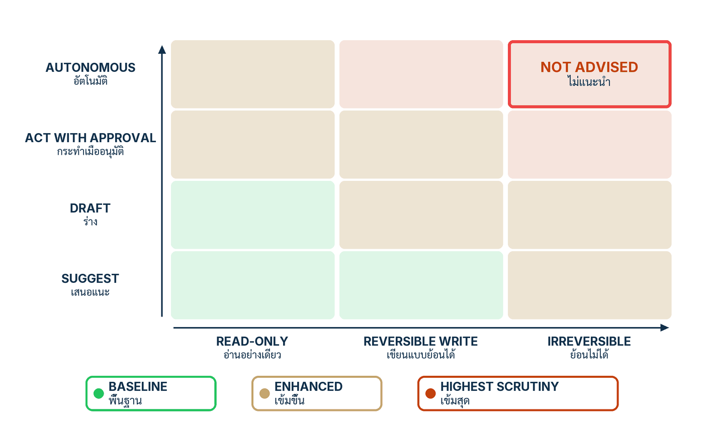

ในบทความนี้
- คันเร่งอิสระสี่ระดับ ชนิดผลกระทบสามชั้น และช่องเดียวในตารางที่เปเปอร์เขียนว่า "ไม่แนะนำ"
- ความจริงหน้างานห้าข้อ สแต็กสี่ชั้น และแปดความล้มเหลวที่ทีมจริงเจอซ้ำ
- ลงมือทำ 7 ขั้น — จากระดับอิสระต่อ action class ถึงเช็กลิสต์นักปฏิบัติ 10 ข้อ
- Go-live review ของน้องคราม — ตารางอิสระ งบความเสี่ยงคงเหลือ และเช็กลิสต์ที่กรอกครบทุกแถว
- ด่านก่อนปล่อยจริง — เจ็ดคำถามที่ตอบได้ด้วย artifact เท่านั้น
- ปิดซีรีส์ — สิ่งที่เปเปอร์จงใจไม่เคลม และก้าวต่อไปในระดับองค์กร
In this post
- The four-level autonomy slider, the three consequence classes, and the one cell the paper marks "not advised"
- Five deployment realities, the four-layer stack, and the eight failures real teams keep meeting
- The seven steps — from autonomy per action class to the ten-item practitioner checklist
- Nong Kram's go-live review — the autonomy table, the residual-risk budget, and a checklist with every row filled
- The pre-launch gate — seven questions that only an artifact can answer
- Closing the series — what the paper deliberately does not claim, and the road onward at the organizational level
🤔 ระบบของคุณผ่านการทดสอบทุกชุดจากตอนที่แล้ว — แล้วใครกดปุ่มปล่อย กดด้วยหลักฐานอะไร และถ้าพรุ่งนี้เช้ามันคืนเงินผิดรายการ ใครถูกปลุก?
ตอนที่แล้ว Prove It จบลงที่ harness ที่ตอบสี่คำถามของบทพิสูจน์ — ระบบเดินตามสเปก การโจมตีแบบรู้ไส้ทะลุชั้น soft ได้แต่ทะลุ execution rail ไม่ได้ และความล้มเหลวเชิงสถานะปิดสนิท แต่หลักฐานไม่ใช่การตัดสินใจ ตอนสุดท้ายคือคำถามที่เหลือ: ระบบควรได้อิสระแค่ไหน ใครดูแลมันหลังวันปล่อย และเราจะรู้ได้อย่างไรว่า "พร้อม" เป็นข้อค้นพบ ไม่ใช่ความรู้สึก
คำตอบมีสามชั้น หนึ่ง ตั้งระดับอิสระด้วย คันเร่งอิสระ (autonomy slider) ต่อชนิดของผลกระทบ ไม่ใช่ต่อทั้งแอป — และปล่อยให้ช่อง Autonomous × irreversible ว่างตลอดไป สอง วางงานปฏิบัติการบนความจริงหน้างานห้าข้อที่เปเปอร์เขียนราคาติดไว้ล่วงหน้า สาม ไล่เช็กลิสต์นักปฏิบัติ 10 ข้อ ซึ่งทุกข้อต้องตอบด้วย artifact ไม่ใช่คำคุณศัพท์ — และเพราะเราเดินมาครบเก้าตอน ทุกแถวมี artifact รออยู่แล้ว นี่คือความหมายจริงของ zero-to-hero: วันปล่อยไม่ต้องสร้างอะไรใหม่ แค่ชี้ไปที่ของที่สร้างเสร็จแล้ว
1. คันเร่งอิสระ — ความเร็วจากโมเดล การควบคุมจากลูป
ข้อสรุปพูดได้ในสองประโยค: ระดับอิสระไม่ใช่ค่าตั้งครั้งเดียวของทั้งระบบ แต่ตั้งแยกต่อชนิดของการกระทำ โดยยึดหลักเดียว — ความพยายามตรวจต้องโตตามอำนาจตัดสินใจและความย้อนกลับไม่ได้ของผลกระทบ และช่องที่อำนาจสูงสุดเจอผลที่ย้อนกลับไม่ได้ เปเปอร์ทำเครื่องหมายว่าไม่แนะนำ ไม่ว่าจะตรวจหนักแค่ไหน[1]
บทที่ 9 ของเปเปอร์วางทุกอย่างเป็นลูปเดียว: AI generate การ์ดกรอง มนุษย์ตรวจส่วนที่เหลือ แล้ว ชุดทดสอบทองคำ (golden set) โตขึ้นทุกรอบ — วงจร generation–verification ที่แบ่งงานระหว่างโมเดลกับ envelope ไว้ชัดในประโยคที่ควรติดผนังห้องทีม:
Speed from the model; evidence and control from the loop.[1] — ความเร็วมาจากโมเดล หลักฐานและการควบคุมมาจากลูป สองข้อนี้ทดแทนกันไม่ได้
สี่ระดับของคันเร่ง
เปเปอร์เรียงระดับอิสระสี่ขั้น จากพึ่งมนุษย์มากที่สุดไปน้อยที่สุด[1]
- Suggest — ระบบเสนอทางเลือก มนุษย์ลงมือเองทั้งหมด ผลกระทบทุกอย่างเกิดจากมือมนุษย์
- Draft — ระบบร่างงานเต็มชิ้น มนุษย์ตรวจ แก้ และกดส่ง งานเร็วขึ้นแต่การปล่อยยังเป็นของคน
- Act with approval — ระบบเตรียมการกระทำจริงจนพร้อม แล้วหยุดรออนุมัติรายรายการ มนุษย์เห็นการกระทำก่อนผลเกิด
- Autonomous — ระบบทำเองจบโดยไม่มีมนุษย์ในเส้นทาง ซึ่งเปเปอร์กำกับตรงตัวว่า low-stakes เท่านั้น
{kind=link}

รูปข้างบนถอดจาก Fig. 2 ของเปเปอร์ และต้องกำกับแบบเดียวกับที่เปเปอร์กำกับตัวเอง: นี่คือฮิวริสติกเชิงภาพ — แถบเป็นลำดับ (ordinal) ไม่ใช่สเกลที่สอบเทียบ และรูปจงใจไม่บอกจำนวนการ์ดต่อช่อง สาระมีสองข้อ ข้อแรก ความพยายามตรวจโตทางเดียว (monotonic) ตามสองแกนพร้อมกัน — อำนาจตัดสินใจ และความย้อนกลับไม่ได้ของผลที่ระบบก่อผ่านตัวกลางของมันเอง ข้อสอง ช่อง Autonomous × irreversible ถูกทำเครื่องหมาย not advised — ไม่มีปริมาณการตรวจใดทดแทนการตัดสินใจของมนุษย์ต่อผลภายนอกที่ย้อนกลับไม่ได้[1] รูปนี้เป็นเข็มทิศ ไม่ใช่เครื่องคิดเลข
การ deployment จริงต้องแทนเข็มทิศด้วยแบบจำลอง: ประเมิน expected harm = likelihood × consequence ปรับด้วย detectability — พลาดแล้วรู้ตัวเร็วแค่ไหน — และ recoverability — พลาดแล้วแก้กลับได้แค่ไหน[1] วิธีคิดเดียวกับแกนของ NIST AI RMF: ความเสี่ยงคือโอกาสคูณขนาดของผล และการยอมรับความเสี่ยงต้องถูกประกาศ ไม่ใช่เป็นค่าปริยาย[2]
สามชั้นของผลกระทบ — และเหตุผลที่ตั้งค่าต่อ action class
| ชนิดผลกระทบ | นิยาม | ตัวอย่างในครามคราฟต์ | นัยต่อการตรวจ |
|---|---|---|---|
| Read-only | อ่านอย่างเดียว ไม่เปลี่ยนสถานะภายนอก | ตอบนโยบายจาก corpus เช็คสถานะออเดอร์ | ปล่อยเร็วได้ สุ่มตรวจเชิงความหมายตามงบ |
| Reversible write | เขียนที่ย้อนกลับได้ด้วยกลไกที่ซ้อมแล้ว | ใส่โน้ตในตั๋ว ร่างข้อความรอตัวแทนส่ง | ตรวจเข้มขึ้น และเส้นทางย้อนกลับต้องถูกซ้อมจริง |
| Irreversible external effect | ผลภายนอกที่เรียกคืนไม่ได้ | refund — ย้อนไม่ได้ตั้งแต่ processor รับรายการ |
มนุษย์อนุมัติ หรือขอบเขตแคบที่ผ่านช่วงพิสูจน์แล้วเท่านั้น |
ทำไมงบ อัตราสุ่มตรวจ และชุดรีวิวต้องตั้งต่อ action class — เพราะความผิดพลาดของ detector เป็นสมบัติของ distribution ไม่ใช่ตัวเลขสากลของตัว detector ตัวจำแนกเดียวกันพลาดไม่เท่ากันบนคำถามนโยบายกับคำขอคืนเงิน และต่อให้อัตราพลาดบังเอิญเท่ากัน ก็ไม่ได้แปลว่ายอมรับได้เท่ากัน — คำตอบนโยบายผิดหนึ่งในร้อยกับคืนเงินผิดหนึ่งในร้อยเป็นคนละความเสี่ยง[1] แต่ละ class จึงถือ threshold, sampling และผู้รีวิวของตัวเอง — ขั้นที่ 3 จะเขียนสิ่งนี้เป็นไฟล์จริง
2. ความจริงหน้างาน — และแปดความล้มเหลวที่พบซ้ำ
ข้อสรุปก่อน: envelope ไม่ฟรี มันคิดราคาเป็น latency สิ่งที่ประหยัดได้คือชั้นประเมินเชิงความหมาย สิ่งที่ห้ามประหยัดคือชั้นโครงสร้าง golden set ต้องรันใหม่ทุกครั้งที่โมเดลขยับ คำว่า auditable แปลว่า "ตามรอยได้" ไม่ใช่ "ปลอดภัย" และการป้องกัน injection เหลืออัตราโจมตีสำเร็จที่ไม่เป็นศูนย์เสมอ — ราคาป้ายที่บทที่ 10 ของเปเปอร์ติดไว้ล่วงหน้า[1]
ห้าความจริงที่ต้องยอมรับก่อนวันปล่อย
- Envelope คิดราคาเป็น latency — หนึ่งคำขอผ่านห้ารางบวกการเรียก judge อีกหนึ่งครั้ง ระบบที่มี envelope ครบช้ากว่าระบบเปลือยเสมอ จงวัดและประกาศราคานี้ อย่าแอบตัดการ์ดเพื่อไล่ตัวเลข
- ชั้น soft ประหยัดได้ ชั้น hard ห้าม — การประเมินเชิงความหมายสุ่มหรือแบ่งชั้นได้ แต่การ validate โครงสร้างและการบังคับเชิงโครงสร้าง (hard enforcement) ของผลกระทบอยู่บนทุก call ที่เกี่ยวข้อง ไม่มีข้อยกเว้นเพื่อความเร็ว
- Golden set รันใหม่ทุกการเปลี่ยนโมเดล — โมเดล hosted เปลี่ยนพฤติกรรมใต้เท้าแบบเงียบ ๆ (non-stationarity) ชุดที่เขียวเมื่อเดือนก่อนไม่ได้พูดอะไรถึงรุ่นที่รันวันนี้
- Auditable = ตามรอยได้ ไม่ใช่ปลอดภัย — ร่องรอยการตัดสินใจ (decision trace) ที่ครบทำให้ประกอบเหตุการณ์กลับได้ แต่ไม่ได้ทำให้เหตุการณ์ถูกต้อง ระบบที่ตรวจย้อนหลังได้สมบูรณ์ยังปล่อยคำตอบผิดได้ทุกวัน
- การป้องกัน injection เหลือ residual เสมอ — การฉีดคำสั่งแฝง (prompt injection) กดให้ต่ำได้แต่กำจัดไม่ได้ ตัวเลขจริงของทุกชั้นป้องกันคืออัตราโจมตีสำเร็จคงเหลือที่ไม่เป็นศูนย์[5]
สแต็กสี่ชั้นที่ระบบต้องมีครบ
เปเปอร์วางระบบที่ปล่อยจริงเป็นสี่ชั้นซ้อน: data foundation ล่างสุด ถัดขึ้นมาคือแกน AI-OS (โมเดล context หน่วยความจำ RAG) แล้ว agentic applications ปิดบนด้วย human-in-the-loop — guardrails พาดขวางทุกชั้น และ gates กำกับทุกการเปลี่ยนแปลง[1] โครงนี้คือเชื้อสายเดียวกับสถาปัตยกรรม Simplex ของ Sha — ให้ส่วนเรียบง่ายที่ตรวจสอบได้จำกัดความเสียหายของส่วนซับซ้อนที่ตรวจสอบไม่ได้[4] เพียงแต่ส่วนซับซ้อนของเราคือโมเดลภาษา และเปเปอร์คิดราคาการข้ามชั้นไว้แบบไม่เหลือที่ให้เถียง:
Skip the data foundation and the core starves; skip the guardrails and it is unsafe; skip the gates and you are flying blind.[1] — ข้ามฐานข้อมูล แกนก็อดอยาก ข้ามการ์ด ระบบก็ไม่ปลอดภัย ข้ามด่านตรวจ เราก็บินโดยมองไม่เห็นอะไรเลย
แปดความล้มเหลว — หน้าตาเวลาเกิดจริงในทีมจริง
Bolted-on chatbot — เปเปอร์เรียกว่า "one application, mistaken for a computer" ทีมแปะหน้าต่างแชทบนระบบเดิมโดยไม่มี data foundation เดโมดูดีเพราะคำถามในเดโมไม่แตะข้อมูลจริง แล้วสัปดาห์แรกหลังปล่อย คำถามครึ่งหนึ่งต้องการสถานะออเดอร์ที่แชทมองไม่เห็น — ได้ระบบที่ตอบเก่งในเรื่องที่ไม่มีใครถาม
Vibes-based shipping — ปล่อยเพราะ "ลองแล้วรู้สึกดี" บนพรอมป์ต์ห้าข้อที่คนเดโมเลือกเอง ไม่มีชุดตายตัว ไม่มี baseline วันที่ผู้บริหารถามว่ารุ่นนี้ดีกว่ารุ่นก่อนไหม คำตอบซื่อสัตย์คือไม่มีใครรู้ — และทำงานแบบนี้จะไม่มีวันรู้ด้วย
Trusting fluency — คำตอบที่เขียนดีผ่านรีวิวง่ายกว่าคำตอบที่ถูก ทีมจึงกลายเป็นผู้ตรวจสำนวนแทนผู้ตรวจข้อเท็จจริงโดยไม่รู้ตัว แต่สมมติฐานข้อแรกจากตอนที่ 5 คือความพลาดของแกนไหลลื่น — มั่นใจ เรียบร้อย และผิด ภาษาที่น่าเชื่อถือไม่ใช่หลักฐานของอะไรนอกจากความสามารถทางภาษา
Ungrounded generation — คำตอบไม่ผูกกับ passage ที่ค้นมาจริง วันหนึ่งระบบไร้การ์ดจะอธิบายนโยบายคืนสินค้าที่ไม่มีในเอกสารฉบับไหนของร้าน และอธิบายมั่นใจพอให้ลูกค้าจำไปอ้างต่อ — attribution ระดับ span ที่รางที่ 5 มีไว้กันเรื่องนี้ตรง ๆ
Unbounded autonomy — เส้นทาง confused deputy: สิทธิ์ไหลไปกับเนื้อหาเพราะคำสั่งกับข้อมูลอยู่ช่องเดียวกัน ระบบถือสิทธิ์เรียก refund แล้วอ่านข้อความที่ใครก็เขียนได้ — หนึ่ง passage ที่ฝังคำสั่งก็พอให้สิทธิ์นั้นถูกใช้แทนเรา ทีมส่วนใหญ่เพิ่มความสามารถของ tool เร็วกว่าเพิ่มการ mediation และช่องว่างระหว่างสองเส้นคือพื้นที่ของผู้โจมตี[5]
Deleting the validating glue — โค้ด validate ระหว่างชั้นดู "ซ้ำซ้อน" เสมอเมื่อระบบนิ่งมาสามเดือน ใครสักคน refactor ทิ้งอย่างหวังดี ทุกอย่างยังเขียวจนโมเดลถูก bump รุ่น — ความพังโผล่ไกลจากจุดที่ลบพอให้ไม่มีใครเชื่อมสองเหตุการณ์ กาวตรวจสอบไม่ใช่ไขมันส่วนเกิน มันคือเหตุผลที่ระบบเคยนิ่ง
No golden set — ทุก incident กลายเป็นการถกจากความจำ การแก้พิสูจน์ไม่ได้ว่าไม่ทำของเก่าพัง ตอนที่ 9 สร้างชุดนี้ให้แล้ว เวอร์ชันที่เจ็บกว่าคือมีชุดแต่ปล่อยให้หยุดโต — กติกาที่ถูกคือทุกความพลาดในสนามต้องกลายเป็นเคสใหม่ก่อนปิดตั๋ว
Single-layer safety — เดิมพันทั้งหมดกับตัวกรองชั้นเดียว มักเป็นชั้น output เพราะติดตั้งง่ายสุด — อะไรที่ผ่านชั้นนั้นได้ก็ได้ทุกอย่าง ผลถอดการ์ดทีละตัวจากตอนที่แล้วบอกเป็นตัวเลข: ถอดรางเดียว ความเสียหายที่รางนั้นเคยรับก็เข้าถึงระบบทั้งกลุ่ม defence in depth ไม่ใช่ความหรูหรา — มันคือเหตุผลที่ความพลาดของชั้นหนึ่งยังไม่ใช่ของทั้งระบบ
3. ลงมือทำ 7 ขั้น
เจ็ดขั้นคือพิธีปล่อยทั้งพิธี — สี่ขั้นแรกตั้งอิสระและการตรวจ สองขั้นถัดมาเตรียมวันที่มันพัง ขั้นสุดท้ายคือเช็กลิสต์ตัดสิน ทุกขั้นจบด้วยของจริงของครามคราฟต์
ขั้นที่ 1 — ตั้งระดับอิสระต่อ action class ไม่ใช่ต่อแอป
ไล่รายการทุกสิ่งที่ระบบทำได้ จัดกลุ่มเป็น action class ตามชนิดผลกระทบจากตารางหัวข้อ 1 แล้วตั้งคันเร่งให้แต่ละ class แยกกัน เหตุผลที่ห้าม dial เดียวทั้งแอป: แอปเดียวถือหลาย class เสมอ ค่าเดียวจะเข้มเกินกับงานอ่าน — เผาเวลามนุษย์กับสิ่งที่ควรไหลอัตโนมัติ — และหละหลวมเกินกับงานเขียน ซึ่งจ่ายแพงกว่า ของน้องครามได้สี่ class: ตอบคำถามนโยบาย (read-only เหนือ corpus) เช็คสถานะออเดอร์ (read-only เหนือ order store) คืนเงินก้อนเล็กในเงื่อนไขแคบ และคืนเงินนอกเงื่อนไข
💡 มุมมองของผม: ให้อิสระแบบเดียวกับให้สิทธิ์ production — เลื่อนขึ้นทีละระดับหลังช่วงทดลองที่มีตัวเลขรองรับ และริบคืนทั้งระดับทันทีเมื่อเกิด incident โดยไม่ต้องประชุม เปเปอร์ไม่ได้กำหนดจังหวะนี้ นี่เป็นแนวปฏิบัติของผมเอง แต่มันทำให้คันเร่งเป็นสิ่งที่ได้มาด้วยหลักฐานและเสียไปด้วยเหตุการณ์ ไม่ใช่ค่าที่ตั้งแล้วลืม
ขั้นที่ 2 — สเกลการตรวจตาม authority × consequence
ต่อแต่ละ class ประเมิน expected harm = likelihood × consequence ปรับด้วย detectability และ recoverability แล้วเลือกความหนาแน่นการตรวจให้แปรตามผลลัพธ์ — ไม่ใช่ตามความสะดวกของทีม ใช้ Fig. 2 เป็นเข็มทิศทางเดียว: ตรวจมากขึ้นเมื่ออำนาจสูงขึ้น มากขึ้นอีกเมื่อผลย้อนไม่ได้ และหยุดที่ "ไม่ปล่อย autonomous" เมื่อสองแกนสูงสุดพร้อมกัน ของน้องคราม: คำตอบนโยบายได้การประเมินแบบสุ่ม เส้นทาง refund ได้การตรวจครบทุกชั้นบวกมนุษย์ — เพราะราคาของหนึ่งความพลาดไม่เท่ากัน
ขั้นที่ 3 — ตั้งงบความเสี่ยงคงเหลือ sampling และ review ต่อ action class
เขียน ความเสี่ยงคงเหลือ (residual risk) เป็นไฟล์ ไม่ใช่ความเข้าใจร่วมในหัวทีม — หนึ่งบรรทัดต่อ class ระบุ escape budget อัตราสุ่มตรวจ ชุดที่มนุษย์รีวิว และรอบรีวิว เหตุผลอยู่ท้ายหัวข้อ 1 แล้ว ของน้องคราม บรรทัดสำคัญที่สุดคือ refund_small.sampling: "100% ภายใน 24 ชั่วโมง" — รายการอนุมัติทุกรายการถูกมนุษย์เห็นย้อนหลังเสมอ แม้คันเร่งจะเลื่อนขึ้นในอนาคต ไฟล์เต็มอยู่หัวข้อ 4
ขั้นที่ 4 — ผูก golden-set re-run เข้ากับทุกการเปลี่ยนโมเดล corpus และ prompt
ทำด่านให้อัตโนมัติ: ทุกครั้งที่พจน์ใดใน บันทึกกำกับรุ่นปล่อย (release manifest) จากตอนที่ 4 เปลี่ยน — รุ่นโมเดล snapshot ของ corpus แฮชของ prompt รุ่น evaluator หรือ threshold — CI ต้องรันชุดทองคำทั้งชุดและ block การ promote เมื่อ regress นี่คือคำตอบเชิงกลไกต่อ non-stationarity — ห้ามต้นน้ำเปลี่ยนไม่ได้ แต่ทำให้ทุกการเปลี่ยนถูกเห็น ของน้องคราม: job เดียวชื่อ golden-gate เฝ้าแฮชของ manifest แล้วรัน harness จากตอนที่ 9 — คนแก้ prompt "นิดเดียว" ผ่านด่านเดียวกับคนเปลี่ยนโมเดลทั้งตัว
ขั้นที่ 5 — เตรียม rollback และ incident response
กำหนดสามสิ่งเป็นลายลักษณ์อักษร ก่อนต้องใช้จริงตอนตีสาม[3]
- Roll back ไปที่อะไร — manifest ฉบับอนุมัติล่าสุดทั้งฉบับ ไม่ใช่ถอยเฉพาะโมเดล เพราะพฤติกรรมเป็นของทุกพจน์ร่วมกัน ถอยบางพจน์คือสร้างชุดผสมที่ไม่เคยผ่านการทดสอบ
- ใครถูกปลุก — ชื่อจริง ช่องทางจริง ลำดับติดต่อจริง "ทีมที่เกี่ยวข้อง" ไม่ใช่คำตอบ เพราะตอนตีสามไม่มีใครชื่อนั้น
- อะไรหยุดระบบ — kill switch ที่นิยามชัด: ปิด execution rail เป็น deny-all ระบบ degrade เป็นโหมด advisory แบบ ล้มแบบปิด (fail-closed) — ความสามารถหายบางส่วน แต่ผลภายนอกหยุดสนิททันที
Runbook หน้าเดียวของน้องคราม: เหตุระดับ refund ให้ freeze tool refund ก่อนเป็นอย่างแรก คงคำตอบ read-only ไว้ให้ลูกค้า ปลุกเจ้าของร้านกับวิศวกรตามลำดับ แล้วถอย manifest เมื่อวินิจฉัยเสร็จ — ร้านตอบคำถามได้ทั้งคืน แค่คืนเงินเองไม่ได้จนกว่ามนุษย์จะกลับเข้าลูป
ขั้นที่ 6 — audit ตัวเองกับแปดความล้มเหลว
เดินรายการทั้งแปดจากหัวข้อ 2 เป็นเอกสาร ไม่ใช่การพยักหน้าในห้องประชุม — ต่อข้อ ตอบสามช่อง: เกิดกับเราไหม หลักฐานคืออะไร และถ้าเกิด ใครเป็นเจ้าของการแก้ภายในเมื่อไร ข้อที่ตอบ "ไม่เกิด" โดยไม่มีหลักฐานถือว่ายังไม่ได้ตอบ ของน้องคราม audit รอบแรกพบครึ่งข้อของข้อ 7: ชุดทองคำมีจริงแต่เคสหมวดจัดส่งบางกว่าหมวดนโยบายคืนสินค้าชัดเจน จึงเกิด action item เติมเคสก่อนวันปล่อย — ผลลัพธ์ที่ดีของ audit คือรายการซ่อมที่เจาะจง ไม่ใช่ตราประทับว่าผ่าน
ขั้นที่ 7 — รันเช็กลิสต์นักปฏิบัติ 10 ข้อ
ข้อสุดท้ายของเปเปอร์คือเช็กลิสต์ที่กติกาเดียวแรงพอเปลี่ยนพฤติกรรมทั้งองค์กร: ทุกข้อตอบด้วย artifact — เอกสาร ตาราง log ที่ยื่นให้ดูได้ — ไม่ใช่คำคุณศัพท์รับประกัน[1] สิบข้อมีดังนี้
- Scope — ชุดงาน มาตรวัดอำนาจ และ ablation ความขาดไม่ได้ พร้อม threshold ที่ประกาศก่อนการประเมิน
- Manifest — โมเดล decoding context corpus tools policies evaluators thresholds ถูก pin ร่วมกันเป็นรุ่นเดียว
- Boundaries — ทุก payload ที่ปล่อยและทุกผลภายนอกออกสู่โลกผ่านเส้นทางเดียวที่มีตัวกลาง
- Hard controls — identity, authority, schema, parameter, rate, transaction, idempotency ตรวจนอกโมเดลทั้งหมด
- Soft controls — false accept / false reject วัดบน slice ที่ใช้จริง และไม่มีตัวไหนถูกเรียกว่า guarantee
- State oracles — การทดสอบตัดสินจาก post-state จริงและ payload ที่ปล่อยจริง ไม่ใช่คำเล่าของโมเดล
- Adversary — เคส fixed, hidden และ adaptive-to-implementation แยกกัน พร้อมประกาศ access และ query budget ของผู้โจมตี
- Operations — เส้นทาง duplicate, timeout, tool error, partial failure, rollback, trace-write ล้มแบบปิดทุกเส้น
- Economics — utility, escape, unsafe effects, escalation, latency, tokens, cost แยกตาม consequence class
- Reproduction — บันทึกรายเคส schemas, dependency lock, ตัวรันคำสั่งเดียว licence, citation metadata และ archive ถาวร
ฉบับกรอกครบของครามคราฟต์ — พร้อมลิงก์กลับไปยัง artifact ของทั้งเก้าตอน — คือหัวใจของหัวข้อถัดไป
4. Artifact — go-live review ของน้องคราม
Artifact ปิดซีรีส์คือเอกสารเดียวชื่อ go-live-review.md สามส่วน: ตารางอิสระต่อ action class งบความเสี่ยงคงเหลือ และเช็กลิสต์ 10 ข้อที่ทุกแถวชี้ของจริง — เอกสารบนโต๊ะประชุมปล่อย และถูกหยิบมาอ่านอีกครั้งหลัง incident แรก
ส่วนที่หนึ่ง — ตารางระดับอิสระต่อ action class
| Action class | ชนิดผลกระทบ | ระดับคันเร่ง | เงื่อนไข |
|---|---|---|---|
| ตอบคำถามนโยบาย / สินค้า | Read-only เหนือ corpus | Autonomous | ทุกคำตอบผ่านราง output ครบ สุ่มตรวจตามงบ |
| เช็คสถานะออเดอร์ | Read-only เหนือ order store | Autonomous | ผูกกับ session ของลูกค้าที่ยืนยันตัวแล้วเท่านั้น |
refund ≤ ฿1,000 และออเดอร์ undelivered |
Irreversible เมื่อ processor รับ | Act with approval | เลื่อนเป็น autonomous ได้หลังช่วงรีวิวที่มี FA/FR รองรับเท่านั้น ริบคืนเมื่อเกิด incident |
refund > ฿1,000 หรือนอกเงื่อนไข |
Irreversible external effect | Act with approval — เสมอ | ไม่มีเส้นทาง autonomous ช่องนั้นว่างโดยนโยบาย ไม่ใช่โดยบังเอิญ |
ส่วนที่สอง — งบความเสี่ยงคงเหลือ
# residual-risk-budget.yaml — งบความเสี่ยงคงเหลือของน้องคราม
# ตัวเลขทั้งหมดเป็นของบทเรียนนี้ ไม่ใช่ตัวเลขของเปเปอร์
answer_policy: # read-only เหนือ corpus
escape_budget: "คำตอบขัดนโยบายไม่เกิน 2 ต่อ 1,000 คำตอบที่สุ่มตรวจ"
sampling: "5% ของทราฟฟิก บวกทุกเคสที่ลูกค้าร้องเรียน"
review: "รายสัปดาห์ โดยเจ้าของร้านกับวิศวกร"
order_status: # read-only เหนือ order store
escape_budget: "ข้อมูลออเดอร์ข้ามลูกค้า = 0 (บังคับด้วย session binding ไม่ใช่ด้วยงบ)"
sampling: "1% ของทราฟฟิก"
review: "รายเดือน"
refund_small: # ไม่เกิน 1,000 บาท และออเดอร์ undelivered เท่านั้น
escape_budget: "รายการต้องห้ามหลุด = 0 (บังคับที่ execution rail)"
sampling: "100% ของรายการที่อนุมัติ ตรวจย้อนภายใน 24 ชั่วโมง"
review: "ทุก escalation บวกสรุปรายสัปดาห์"
refund_large: # เกิน 1,000 บาท หรือนอกเงื่อนไข
autonomy: "act-with-approval เสมอ — ไม่มีเส้นทาง autonomous"
review: "มนุษย์อนุมัติเป็นรายรายการ"
สังเกตการแบ่งงานในไฟล์: ศูนย์สองตัวไม่ใช่งบจริง ๆ — มันคือการรับประกันเชิงโครงสร้างที่ execution rail กับ session binding แบกไว้ งบตัวจริงคือบรรทัด answer_policy ที่ยอมรับตรง ๆ ว่าการตรวจเชิงความหมายพลาดได้ และประกาศว่าพลาดได้แค่ไหนก่อนใครสักคนถูกปลุก
ส่วนที่สาม — เช็กลิสต์ 10 ข้อที่กรอกครบ
| # | ข้อ | Artifact ที่ตอบ — สร้างไว้แล้วในซีรีส์ |
|---|---|---|
| 1 | Scope | ใบงานจำแนกจาก ตอนที่ 1 — สองแกน สี่ช่อง threshold ประกาศก่อนวัด |
| 2 | Manifest | Release manifest จาก ตอนที่ 4 — แปดพจน์ของสมการ (1) pin ร่วมกัน |
| 3 | Boundaries | แผนที่ชั้นจาก ตอนที่ 2 ทะเบียนรอยต่อจาก ตอนที่ 3 และภาพร่าง envelope จาก ตอนที่ 5 |
| 4 | Hard controls | โค้ดลูป ai_core_operation จาก ตอนที่ 6 — execution guard ที่ deny by default |
| 5 | Soft controls | ตารางห้ารางจาก ตอนที่ 8 บวกแถว Estimated ของสัญญาจาก ตอนที่ 7 — FA/FR ต่อ slice |
| 6 | State oracles | Harness จาก ตอนที่ 9 — oracle อ่าน post-state ของ order store ไม่อ่านคำเล่าของโมเดล |
| 7 | Adversary | ชุดโจมตีสามชั้นใน harness ตอนที่ 9 — fixed / hidden / adaptive แยกรายงาน พร้อม access ของผู้โจมตี |
| 8 | Operations | การทดสอบเชิงสถานะจากตอนที่ 9 (duplicate, tool failure) บวก runbook rollback ของตอนนี้ |
| 9 | Economics | residual-risk-budget.yaml ของตอนนี้ บวกช่อง latency / tokens / cost ต่อ consequence class ในสัญญาตอนที่ 7 |
| 10 | Reproduction | ตัวรันคำสั่งเดียวของ harness ตอนที่ 9 บวก dependency lock ใน manifest ตอนที่ 4 |
นี่คือผลตอบแทนของทั้งซีรีส์: วันยื่น go-live review ไม่มีข้อไหนเริ่มจากศูนย์ ใบงานตอนที่ 1 ตอบข้อแรก manifest ตอนที่ 4 ตอบข้อสอง โค้ดตอนที่ 6 ตอบข้อสี่ harness ตอนที่ 9 ตอบสามข้อรวด ทีมที่เดินตามลำดับนี้ไม่ได้แค่ "มีระบบ" — มันมีหลักฐานของระบบครบหนึ่งชุด และนั่นคือสิ่งเดียวที่เช็กลิสต์ยอมรับ
5. Validation check — ด่านสุดท้ายก่อนปล่อยจริง
ต่างจากเก้าตอนก่อน ตารางนี้ไม่ใช่แบบฝึกหัดท้ายบท — มันคือด่านปล่อยของจริง กติกาเดียวกับเช็กลิสต์: แต่ละแถวผ่านเมื่อยื่น artifact ที่ระบุได้เท่านั้น คำยืนยันด้วยปากไม่มีค่า และแถวใดตอบไม่ได้ วันปล่อยของระบบคุณยังมาไม่ถึง
| # | คำถาม | Artifact ที่ต้องยื่น |
|---|---|---|
| 1 | ตารางอิสระตั้งต่อ action class และช่อง Autonomous × irreversible ว่าง ใช่หรือไม่ | ตารางอิสระ — ยื่นตัวตาราง ไม่ใช่คำอธิบายว่ามี |
| 2 | ทุก action class มีบรรทัดงบความเสี่ยงคงเหลือ พร้อม sampling rate และผู้รีวิวหรือไม่ | residual-risk-budget.yaml หรือเทียบเท่า ครบทุก class |
| 3 | เปลี่ยนพจน์ใดของ manifest ก็ trigger การรันชุดทองคำอัตโนมัติใช่หรือไม่ | Config ของ gate บวก log จากการ bump รุ่นโมเดลครั้งจริงล่าสุด |
| 4 | เคยซ้อม rollback ไป manifest ฉบับอนุมัติล่าสุดจริงแล้วหรือยัง | บันทึกการซ้อม พร้อมเวลาที่ใช้จนกลับสู่รุ่นก่อน |
| 5 | มีชื่อคนที่ถูกปลุก และนิยาม "หยุดระบบ" ที่กดได้จริงหรือไม่ | Runbook หน้า incident บวกตาราง on-call ที่มีชื่อจริง |
| 6 | Audit แปดความล้มเหลวทำเป็นเอกสารแล้ว ทุก finding มีเจ้าของหรือไม่ | บันทึก audit — แปดแถว สามช่อง พร้อมเจ้าของและกำหนดเวลา |
| 7 | เช็กลิสต์ 10 ข้อตอบครบด้วยลิงก์ artifact โดยไม่มีคำคุณศัพท์รับประกันสักคำใช่หรือไม่ | go-live-review.md ฉบับเต็ม — เอกสารเดียวที่ประชุมปล่อยใช้ตัดสิน |
6. ก้าวต่อไป
สิบตอนของซีรีส์เดินจากคำถามว่าระบบของเราเป็น ระบบที่มี AI เป็นแกน (AI-core system) จริงหรือไม่ ไปถึงเอกสารที่ใช้ตัดสินวันปล่อย ถ้าต้องบีบทั้งเส้นทางเหลือประโยคเดียว ผมจะใช้บทสรุปของเปเปอร์เอง: วางการบังคับเชิงโครงสร้างที่พรมแดนที่รองรับมันได้ วัดคุณสมบัติเชิงความหมายเป็นค่าประเมินที่พลาดได้ เก็บหลักฐานให้พอประกอบทุกเส้นทางกลับ และสเกลอิสระตามผลกระทบกับความไม่แน่นอนที่เหลือ[1] สี่วลีนี้คือทั้งซีรีส์ในรูปย่อ
สิ่งที่ต้องพูดชัดตอนปิดคือสิ่งที่เปเปอร์จงใจไม่เคลม — และซีรีส์นี้รับขอบเขตเดียวกัน ตัวเลขทุกตัวของเปเปอร์ (517 executions, 37 tests, 30/30 benign, 0/40 เทียบ 40/40, 8/12 เทียบ 12/12, 0/4 เทียบ 4/4) วัดบน fixtures ที่ผู้เขียนสร้างเองบน deterministic cores — เป็นหลักฐาน conformance ของ wiring และ boundary semantics ไม่ใช่ field safety ไม่ใช่คำตัดสินคุณภาพโมเดล ไม่ใช่ข้อสรุปเชิงประชากร[1] คำเตือนเชิงประจักษ์กลางเปเปอร์ยังคุมทุกอย่างที่เราสร้าง: ชุดทดสอบตายตัวที่เขียวสนิทอยู่ร่วมกับอัตรา escape เชิงความหมายที่สูงได้ ระบบที่ผ่านด่านเจ็ดแถวข้างบนจึงไม่ใช่ระบบ "พิสูจน์แล้วว่าปลอดภัย" — มันคือระบบที่ประกาศขอบเขตครบ มีหลักฐานครบ และมีคนรับผิดชอบครบ ซึ่งเป็นสิ่งดีที่สุดที่วิศวกรรมให้ได้กับแกนที่เป็นความน่าจะเป็น
งานหลังวันปล่อยคือลูปเดิมที่ไม่จบ: ทุก incident เติมชุดทองคำ ทุกการเลื่อนคันเร่งมีตัวเลขรองรับ ทุกการเปลี่ยนโมเดลผ่านด่านเดิม ส่วนคำถามที่ซีรีส์นี้ไม่ได้ตอบคือคำถามระดับองค์กร — ทีมแบบไหนดูแลระบบแบบนี้ งบและ KPI ตั้งอย่างไร ผู้บริหารต้องถามอะไรในห้องอนุมัติ — ทั้งหมดเป็นเนื้อหาของซีรีส์คู่ขนาน AI Transformation for Organizations ที่มองจากชั้นองค์กรลงมา ซีรีส์นี้สร้างระบบ ซีรีส์นั้นสร้างองค์กรรอบระบบ
🎯 สิ่งสำคัญที่ต้องจำ
- Autonomy slider = คันเร่งอิสระสี่ระดับ Suggest → Draft → Act with approval → Autonomous (low-stakes เท่านั้น) — ตั้งต่อ action class ไม่ใช่ต่อแอป
- Consequence class = read-only · reversible write · irreversible external effect — งบ sampling และ review ตั้งแยกต่อชั้น เพราะความพลาดของ detector เป็นของ distribution
- Autonomous × irreversible = ช่องที่ต้องว่าง — ไม่มีปริมาณการตรวจใดทดแทนการตัดสินใจของมนุษย์ต่อผลภายนอกที่ย้อนกลับไม่ได้
- ความจริงหน้างาน = soft สุ่มได้แต่ hard อยู่ทุก call · golden set รันใหม่ทุกการเปลี่ยนโมเดล · auditable = ตามรอยได้ ไม่ใช่ปลอดภัย · injection เหลือ residual เสมอ
- แปดความล้มเหลว = รายการ audit ตัวเอง ตั้งแต่ bolted-on chatbot ถึง single-layer safety — ตอบทุกข้อด้วยหลักฐาน ไม่ใช่ความมั่นใจ
- เช็กลิสต์นักปฏิบัติ = 10 ข้อที่ทุกข้อตอบด้วย artifact ไม่ใช่คำคุณศัพท์ — และเก้าตอนที่ผ่านมาสร้าง artifact ครบทุกแถวแล้ว
อ้างอิง
ตรวจสอบทุกแหล่งเมื่อ 8 กันยายน 2026 (เวลาประเทศไทย) · ป้ายหลักฐานสี่แบบ: Law ตัวบทกฎหมายหรือประกาศทางการ · Standard มาตรฐานหรือกรอบทางการที่เผยแพร่แล้ว · Study งานวิจัยหรือสัญญาณภาคสนาม · Synthesis การสังเคราะห์ของผู้เขียนหรือแหล่งที่ไม่ใช่งานวิจัย
- Synthesis Anirach Mingkhwan. Engineering AI-Core Systems: A Reference Architecture and Assurance Contract for Software 3.0 — CreativeLAB, FITM, KMUTNB, 2026. เอกสารที่ผู้เขียนจัดหาให้ ยังไม่ตีพิมพ์ ไม่มี URL สาธารณะ จึงไม่มีลิงก์และไม่มีวันเข้าถึง. รองรับ: ลูป generation–verification และประโยค "speed from the model; evidence and control from the loop" คันเร่งอิสระสี่ระดับ สถานะฮิวริสติกของ Fig. 2 กับช่อง autonomous × irreversible ที่ไม่แนะนำ สูตร expected harm ชนิดผลกระทบสามชั้นและการตั้งงบต่อ action class ความจริงหน้างานห้าข้อ สแต็กสี่ชั้นกับประโยค "skip the …" แปดความล้มเหลว เช็กลิสต์นักปฏิบัติ 10 ข้อ ตัวเลขของ specimen พร้อมประโยคขอบเขต และบทสรุปสี่วลี
- Standard NIST (U.S. Department of Commerce). Artificial Intelligence Risk Management Framework (AI RMF 1.0) — NIST AI 100-1, 2023. nist.gov — เข้าถึง 2026-09-08. รองรับ: การมองความเสี่ยงเป็นฟังก์ชันของโอกาสกับขนาดของผล การประกาศระดับความเสี่ยงที่ยอมรับได้เป็นการตัดสินใจขององค์กร และการปฏิบัติต่อการปล่อยระบบเป็นด่านตัดสินใจที่บริหารความเสี่ยง — อ้างระดับกรอบโดยรวม ไม่ใช่รายข้อ
- Standard NIST (U.S. Department of Commerce). AI RMF: Generative Artificial Intelligence Profile — NIST AI 600-1, กรกฎาคม 2024. doi.org — เข้าถึง 2026-09-08. รองรับ: กิจกรรมการตอบสนองเหตุการณ์และเกณฑ์การหยุดใช้งานระบบ generative AI ที่อยู่เบื้องหลังขั้นเตรียม rollback และ incident response — ใช้เป็นเอกสารประกอบโดยสมัครใจที่องค์กรเลือกปรับเอง
- Study Sha, L. Using Simplicity to Control Complexity — IEEE Software 18(4), 2001, pp. 20–28. doi.org — เข้าถึง 2026-09-08. รองรับ: หลักการให้ส่วนประกอบเรียบง่ายที่ตรวจสอบได้จำกัดความเสียหายของส่วนประกอบซับซ้อนที่ตรวจสอบไม่ได้ — เชื้อสาย Simplex ที่ assurance envelope ของเปเปอร์สืบทอดมา
- Standard OWASP Foundation. OWASP Top 10 for LLM Applications — 2025. ไม่มี URL ที่อ้างในซีรีส์นี้. รองรับ: สถานะของ prompt injection และ excessive agency ในฐานะชั้นความเสี่ยงที่อุตสาหกรรมยอมรับร่วมกัน และฉันทามติว่าการป้องกัน injection เป็นการบรรเทา ไม่ใช่การกำจัด — สอดคล้องกับอัตราโจมตีคงเหลือไม่เป็นศูนย์ของเปเปอร์
🤔 Your system passed every suite from the previous post — so who presses the release button, on what evidence, and if it refunds the wrong order tomorrow morning, who gets woken up?
The previous post, Prove It, ended with a harness that answers the four validation questions — the system routes as specified, attacks written after reading the rules get through the soft layer but not the execution rail, and stateful failures fail closed. But evidence is not a decision. This final post is about what remains: how much autonomy the system should be granted, who looks after it after launch day, and how we know that "ready" is a finding rather than a feeling.
This post's answer has three layers. First, set the autonomy level with the autonomy slider per kind of effect, not per app — and leave the autonomous-times-irreversible cell empty forever. Second, build operations on the five deployment realities the paper states plainly, from the latency the envelope charges to the residual attack rate that never reaches zero. Third, walk the paper's ten-item practitioner checklist, where every item must be answered with an artifact rather than an adjective — and because we have walked nine posts together, every row of that checklist already has its artifact waiting. That is what zero-to-hero actually means: on launch day nothing new has to be built, only pointed at.
1. The Autonomy Slider — Speed from the Model, Control from the Loop
This section's conclusion fits in two sentences: the autonomy level is not a single setting for the whole system but a value set separately per kind of action, governed by one principle — verification effort must grow with decision authority and with the irreversibility of the effect — and the cell where the highest authority meets an irreversible effect is the one the paper marks not advised, no matter how heavy the verification.[1]
The paper's Section 9 frames everything as one loop: the AI generates, the gates filter, a human verifies the residue, and the golden set grows on every pass — a generation–verification loop in which the model's capability and the envelope's machinery divide the work cleanly. The paper compresses that division into a sentence I think belongs on the team-room wall:
Speed from the model; evidence and control from the loop.[1] — Neither half substitutes for the other.
The four positions of the slider
The paper orders autonomy in four steps, from most human-dependent to least.[1]
- Suggest — the system proposes options or points at things; the human does everything. Every effect comes from a human hand.
- Draft — the system produces complete work; the human reviews, edits, and presses send. The work is accelerated, but release remains a human decision.
- Act with approval — the system prepares a real action all the way to ready, then stops for per-item approval. The human sees the action before the effect exists, not after.
- Autonomous — the system carries the task to completion with no human in the path — which the paper qualifies in the same breath: for low-stakes work only.
The figure above is drawn from the paper's Fig. 2, and I have to annotate it exactly the way the paper annotates itself: this is an illustrative heuristic. The bands are ordinal, not a calibrated scale, and the figure deliberately implies nothing about how many controls each cell requires. It intends to carry exactly two claims. First, verification effort grows monotonically along both axes at once — the system's decision authority, and the irreversibility of the effect the system produces through its own mediated path. Second, the autonomous-times-irreversible cell is marked not advised — no amount of verification substitutes for a human decision on an irreversible external effect.[1] The figure works as a compass; it does not work as a calculator.
A real deployment must replace the compass with a model: the paper says to estimate expected harm = likelihood × consequence, adjusted by two factors — detectability, how quickly we would notice a miss, and recoverability, how much of a miss can be undone.[1] The same reasoning anchors NIST's AI RMF: risk as likelihood times magnitude, and risk acceptance as a declared decision, never a default.[2]
Three consequence classes — and why settings are made per action class
| Consequence class | Definition | KramKraft example | What it implies for verification |
|---|---|---|---|
| Read-only | Reads only; changes no state outside the system | Answering return policy from the corpus; checking order status against the order store | Can flow fast, with semantic checks sampled against a declared budget |
| Reversible write | A write that can be undone by a rehearsed mechanism | Adding a note to a customer ticket; drafting a message an agent will send | Tighter verification, and a reversal path that has actually been rehearsed, not merely documented |
| Irreversible external effect | An external effect that cannot be recalled once made | refund — irreversible from the moment the payment processor accepts the transaction |
Human approval, or only a narrow scope that has survived a proving period — a fully autonomous cell does not exist |
Why must the risk budget, sampling rate and review set be set per action class rather than as one global value? Because a detector's error is a property of the distribution it runs on, not a universal number belonging to the detector. The same classifier misses at different rates on policy questions and on refund requests — and even if the rates happened to be equal, equal rates would not imply equal acceptability: one wrong policy answer in a hundred and one wrong refund in a hundred are different risks in different worlds.[1] Each class's budget line therefore carries its own threshold, its own sampling, and its own reviewer — which is exactly what Step 3 writes down as a real file.
2. Deployment Realities — and the Eight Recurring Failures
Conclusion first: the envelope is not free — it charges latency on every request. What can be economized is the semantic-evaluation layer; what must never be economized is the structural layer. Golden sets must be re-run every time the model moves. "Auditable" means traceable, not safe. And injection defences always leave a non-zero residual attack rate. These are the price tags the paper attaches in advance, in Section 10.[1]
Five realities to accept before launch day
- The envelope charges latency — one request's path crosses five rails plus one judge call. A fully enveloped system will always be slower than a bare one. Measure and declare that price; never quietly strip a guard to chase a number.
- The soft layer can be economized; the hard layer cannot — semantic evaluation may be sampled or tiered by risk, but structural validation and the hard enforcement of effects stay on every applicable call. There is no exception for speed.
- Golden sets re-run on every model change — a hosted model shifts behaviour under our feet silently (non-stationarity). A golden set that was green last month says nothing about the version running today.
- Auditable means traceable, not safe — a complete decision trace lets us reconstruct every route after the fact, but it does not make any route correct. A perfectly auditable system can release wrong answers every day.
- Injection defence always leaves a residual — prompt injection is a risk that can be pressed down but not eliminated. The honest number for any defence stack is a non-zero residual attack success rate, which is exactly what both the paper and the industry's standard risk list concede.[5]
The four-layer stack a system needs in full
The paper draws the deployed whole as four stacked layers: the data foundation at the bottom, then the AI-OS core (models, context, memory, and RAG), then the agentic applications, closed at the top by the human-in-the-loop — with guardrails cross-cutting every layer and gates governing every change.[1] The shape is not new in reliability engineering — it is the same lineage as Sha's Simplex architecture, where a simple, verifiable component bounds the damage a complex, unverifiable component can do.[4] What has changed is that our complex component is a language model, and the paper prices skipping any layer in a sentence that leaves no room to argue:
Skip the data foundation and the core starves; skip the guardrails and it is unsafe; skip the gates and you are flying blind.[1] — Each clause names a different bankruptcy: an underfed core, an unbounded one, and one whose changes nobody can see.
The eight failures — what each looks like when it happens to a real team
Bolted-on chatbot — the paper calls this "one application, mistaken for a computer". A team staples a chat window onto the old system with no data foundation under it. The demo looks great because none of the demo questions touch real data — and in the first week after launch, half the customers' questions need order state the chat cannot see. What the organisation gets is a system that answers brilliantly on the topics nobody asks about.
Vibes-based shipping — shipping because "we tried it and it felt good" on five prompts the demo-giver chose. No fixed suite, no baseline. The day an executive asks whether this build is better than the last one, the honest answer is that nobody knows — and, working this way, nobody ever will.
Trusting fluency — a well-written answer passes review more easily than a correct one, so the team drifts, without noticing, into reviewing prose instead of facts. But the first core assumption we set down back in post #5 is that the core's errors are fluent — confident, well-formed, and wrong. Convincing language is evidence of nothing except linguistic competence.
Ungrounded generation — answers not bound to any passage actually retrieved. One day the unguarded system will explain a return policy that exists in no document the shop ever wrote, and explain it confidently enough for the customer to remember and quote back. Span-level attribution at rail five exists precisely to prevent this.
Unbounded autonomy — the confused-deputy route in full: privilege flows with content, because instructions and data share one channel. The system holds the authority to call refund, and it reads text anyone can write — a single planted passage is enough for that authority to be spent on our behalf. Most teams grow their tools' capability faster than their mediation, and the gap between those two lines is the attacker's workspace.[5]
Deleting the validating glue — validation code between layers always looks "redundant" once the system has been quiet for three months. Someone refactors it away in good faith, and everything stays green until the model gets a version bump — at which point the breakage surfaces far enough from the deletion that nobody connects the two events. The validating glue is not excess fat; it is the reason the system was quiet.
No golden set — every incident becomes a debate from memory, and no fix can be proven not to regress the last one. Post #9 built this set for you. The later, more painful version of the failure is having the set and letting it stop growing — the correct rule is that every miss found in the field becomes a new case in the set before its ticket closes.
Single-layer safety — betting all safety on one filter, usually at the output because that is easiest to install; then whatever passes that one layer gets everything at once. The leave-one-control-out results from the previous post state this as numbers: remove a single rail and the whole family of challenges that rail used to absorb reaches the system immediately. Defence in depth is not a luxury — it is the only reason one layer's error is not yet the whole system's error.
3. The Seven Steps
The seven steps are the whole launch ceremony — the first four set autonomy and verification, the next two prepare for the day it breaks, and the last is the deciding checklist. Every step ends with the real KramKraft beat.
Step 1 — Set the autonomy level per action class, not per app
Enumerate everything the system can do, group the items into action classes by consequence (using the table in section 1), then set a slider position for each class separately. The reason a single dial per app is forbidden: one app always holds several classes, so one value covering all of them is simultaneously too strict for reads — burning human time on what should flow automatically — and too loose for writes, which is the direction that costs far more. Nong Kram separates into four classes: policy and product answers (read-only over the corpus), order-status checks (read-only over the order store), small refunds under narrow conditions, and refunds outside those conditions.
💡 My view: grant autonomy the way you grant production access — promote one level at a time after a trial period with numbers behind it, and revoke the whole level immediately on an incident, no meeting required. The paper does not prescribe this cadence; it is my own practice. But it makes the slider something earned with evidence and lost with events, rather than a value set once and forgotten.
Step 2 — Scale verification to authority × consequence
For each class, estimate expected harm = likelihood × consequence, adjust for detectability and recoverability, then choose verification density to track the result — not technical difficulty, and not the team's convenience. Use Fig. 2 as a one-direction compass: more verification as authority rises, more again as effects become irreversible, and a hard stop at "no autonomous release" where both axes peak together. For Nong Kram: policy answers get sampled semantic evaluation, while the refund path gets the full stack plus a human in the loop — because the price of one miss is not the same.
Step 3 — Set a residual-risk budget, sampling rate and review set per action class
Write the residual risk down as a file, not as a shared understanding in the team's heads — one line per class stating the acceptable escape budget, the sampling rate, the set a human reviews, and the review cadence. The reason was given at the end of section 1. For Nong Kram the most important line is refund_small.sampling: "100% within 24 hours" — every approved refund is seen by a human in retrospect, always, even if the slider position is promoted later. The full file is in section 4.
Step 4 — Wire golden-set re-runs into every model, corpus and prompt change
Make the gate automatic: whenever any term of the release manifest from post #4 changes — model version, corpus snapshot, prompt-template hash, evaluator version, or a threshold — CI must run the entire golden set and block promotion on regression. This is the mechanical answer to non-stationarity — we cannot stop upstream from changing, but we can make every change visible. For Nong Kram: a single job named golden-gate watches the manifest hash and runs the harness from post #9 — whoever edits the prompt "just slightly" walks through the same gate as whoever swaps the whole model.
Step 5 — Prepare rollback and incident response
Fix three things in writing, in advance, before they are needed at three in the morning.[3]
- Roll back to what — to the last approved manifest in its entirety, never the model alone, because behaviour belongs to all the terms jointly. Rolling back some terms creates a mixed configuration that has never been tested at all.
- Who gets woken up — real names, real channels, a real contact order. "The relevant teams" is not an answer, because at three in the morning nobody is named that.
- What stops the system — a precisely defined kill switch: close the execution rail to deny-all, and the whole system degrades to advisory mode, fail-closed — some capability disappears, but external effects stop completely and immediately.
Nong Kram's one-page runbook reads: for a refund-level incident, freeze the refund tool first, keep the read-only answers alive for customers, wake the shop owner and the engineer in that order, and roll the manifest back once diagnosis is done — the shop keeps answering questions all night; it just cannot refund on its own until a human is back in the loop.
Step 6 — Audit yourself against the eight characteristic failures
Walk all eight items from section 2 as a document, not as nods in a meeting — for each one, answer three columns: does this happen to us, what evidence supports that answer, and if it does happen, who owns the fix and by when. An item answered "does not happen" with no evidence counts as unanswered. For Nong Kram, the first audit found half of item 7: the golden set exists but is thin on one side — shipping-condition cases are clearly fewer than return-policy cases — producing an action item to add shipping cases before launch. That is what a good audit yields: a specific repair list, not a stamp that says passed.
Step 7 — Run the ten-item practitioner checklist
The paper's last word is a checklist whose one rule is strong enough to change how a whole organisation behaves: every item must be answered with an artifact — a document, a table, a log file that can be handed over — never with an assurance adjective.[1] The ten items are these.
- Scope — the task set, the authority measure, and the indispensability ablation, with thresholds declared before evaluation
- Manifest — model, decoding, context, corpus, tools, policies, evaluators and thresholds pinned together as one release
- Boundaries — every released payload and every external effect reaches the world through one mediated path
- Hard controls — identity, authority, schema, parameter, rate, transaction and idempotency checks all outside the model
- Soft controls — detector false accepts and false rejects measured on the slices actually served, and none of them called a guarantee
- State oracles — tests judged from authoritative post-state and the released payload, never from the model's narration
- Adversary — fixed, hidden and adaptive-to-implementation cases kept separate, with the attacker's access and query budget stated
- Operations — the duplicate, timeout, tool-error, partial-failure, rollback and trace-write paths all fail closed
- Economics — utility, escapes, unsafe effects, escalation, latency, tokens and cost reported by consequence class
- Reproduction — per-case records, schemas, a dependency lock, a one-command runner, licence, citation metadata and an immutable archive
KramKraft's completed copy — with links back to the artifacts of all nine preceding posts — is the heart of the next section.
4. The Artifact — Nong Kram's Go-Live Review
The series-closing artifact is a single document, go-live-review.md, in three parts: the autonomy table per action class, the residual-risk budget, and the ten-item checklist with every row pointing at something real. It is the document on the release meeting's table — and the one read again after the first incident.
Part one — the autonomy table per action class
| Action class | Consequence class | Slider position | Conditions |
|---|---|---|---|
| Policy / product answers | Read-only over the corpus | Autonomous | Every answer passes the full output rail; semantic checks sampled per the budget |
| Order-status checks | Read-only over the order store | Autonomous | Bound to the authenticated customer's own session only |
refund up to THB 1,000, order still undelivered |
Irreversible once the processor accepts | Act with approval | May be promoted to autonomous only after a review period with measured FA/FR behind it, and demoted on any incident |
refund above THB 1,000, or outside the conditions |
Irreversible external effect | Act with approval — always | No autonomous path exists; that cell is empty by policy, not by accident |
Part two — the residual-risk budget
# residual-risk-budget.yaml — Nong Kram's residual-risk budget
# All numbers are this tutorial's, not the paper's
answer_policy: # read-only over the corpus
escape_budget: "at most 2 policy-contradicting answers per 1,000 sampled"
sampling: "5% of traffic, plus every case a customer complains about"
review: "weekly, by the shop owner and the engineer"
order_status: # read-only over the order store
escape_budget: "cross-customer order data = 0 (enforced by session binding, not by budget)"
sampling: "1% of traffic"
review: "monthly"
refund_small: # up to 1,000 baht, undelivered orders only
escape_budget: "prohibited transactions released = 0 (enforced at the execution rail)"
sampling: "100% of approved transactions, reviewed within 24 hours"
review: "every escalation, plus a weekly summary"
refund_large: # above 1,000 baht, or outside the conditions
autonomy: "act-with-approval always — no autonomous path"
review: "human approval per transaction"
Notice the division of labour inside the file: the two zeroes are not really budget at all — they are structural guarantees carried by the execution rail and by session binding. The genuine budget is the answer_policy line, which admits plainly that semantic checking can miss, and declares exactly how much it may miss before somebody has to be woken up.
Part three — the ten-item checklist, filled in
| # | Item | Answering artifact — already built in this series |
|---|---|---|
| 1 | Scope | The classification worksheet from post #1 — two axes, four quadrants, thresholds declared before measurement |
| 2 | Manifest | The release manifest from post #4 — all eight terms of equation (1) pinned together |
| 3 | Boundaries | The layer map from post #2, the seam register from post #3, and the envelope sketch from post #5 |
| 4 | Hard controls | The ai_core_operation loop code from post #6 — an execution guard that denies by default |
| 5 | Soft controls | The five-rail table from post #8 plus the Estimated rows of the contract from post #7 — FA/FR per slice |
| 6 | State oracles | The harness from post #9 — oracles that read the order store's post-state, never the model's narration |
| 7 | Adversary | The three-tier attack suite in post #9's harness — fixed / hidden / adaptive reported separately, attacker access stated |
| 8 | Operations | The stateful tests from post #9 (duplicates, tool failure) plus this post's rollback runbook |
| 9 | Economics | This post's residual-risk-budget.yaml plus the latency / tokens / cost columns per consequence class in post #7's contract |
| 10 | Reproduction | Post #9's one-command harness runner plus the dependency lock in post #4's manifest |
This is the payoff of the whole journey: on the day the go-live review is due, not one row starts from zero. The worksheet from post #1 answers the first item, the manifest from post #4 the second, the loop code from post #6 the fourth, and the harness from post #9 answers three items in a row. A team that walked this sequence does not merely "have a system" — it holds one complete body of evidence about the system, and that is the only currency the checklist accepts.
5. Validation Check — This One Is the Launch Gate
Unlike the nine posts before it, this table is not an end-of-chapter exercise — it is the launch gate itself. The rule is the checklist's own: a row passes only when a named artifact is produced. A verbal assurance is worth nothing here, and any row you cannot answer means your system's launch day has not arrived yet.
| # | Question | Artifact to produce |
|---|---|---|
| 1 | Is your autonomy table set per action class, with the autonomous × irreversible cell empty? | The autonomy table — show the table itself, not a description of having one |
| 2 | Does every action class have a residual-risk budget line, with a sampling rate and a named reviewer? | residual-risk-budget.yaml or equivalent, covering every class |
| 3 | Does a change to any manifest term automatically trigger a full golden-set run? | The gate config plus the run log from the most recent real model-version bump |
| 4 | Has rollback to the last approved manifest actually been rehearsed? | The drill record, with the real time taken until the system was back on the previous release |
| 5 | Is there a named person who gets woken up, and a definition of "stop the system" that can really be pressed? | The incident page of the runbook plus an on-call rota with real names |
| 6 | Has the eight-failure audit been done as a document, with an owner for every finding? | The audit record — eight rows, three columns, owners and deadlines attached |
| 7 | Are all ten checklist items answered with links to artifacts, with not one assurance adjective? | The complete go-live-review.md — the single document the release meeting decides on |
6. The Road Ahead
The series' ten posts walked from the question of whether your system is genuinely an AI-core system to the document a release decision is made on — and if the whole road had to compress into one sentence, I would use the paper's own conclusion: put hard invariants at the boundaries that admit them; measure semantic properties as fallible estimates; retain enough evidence to reconstruct every route; and scale autonomy to consequence and residual uncertainty.[1] Those four clauses are the entire series in miniature.
What must be said plainly at the close is what the paper deliberately does not claim — and this series inherits every one of those boundaries. Every number in the paper (517 executions, 37 tests, 30/30 benign, 0/40 against 40/40, 8/12 against 12/12, 0/4 against 4/4) was measured on fixtures the author constructed, over deterministic cores — it is evidence of conformance of the wiring and the boundary semantics, not a field-safety claim, not a verdict on model quality, and not a population claim of any kind.[1] The empirical warning the paper plants at its centre governs everything we built: a clean fixed suite can coexist with a high semantic escape rate. A system that passes all seven gate rows above is therefore not a system "proven safe" — it is a system whose limits are fully declared, fully evidenced, and fully owned, which is the best that engineering can give a probabilistic core.
The work after launch day is the same loop with no end: every incident feeds the golden set, every slider promotion needs numbers behind it, every model change walks the same gate. And the next question — the one this series has not answered — is the organizational one: what kind of team runs a system like this, how its budget and KPIs are set, what an executive must ask in the approval room. All of that is the subject of the companion series, AI Transformation for Organizations, which starts from this very question seen from the organizational layer downward. This series built the system; that one builds the organization around it.
🎯 Key Takeaways
- Autonomy slider = four positions, Suggest → Draft → Act with approval → Autonomous (low-stakes only) — set per action class, never per app
- Consequence class = read-only · reversible write · irreversible external effect — risk budget, sampling and review set per class, because detector error belongs to the distribution
- Autonomous × irreversible = the cell that stays empty — no amount of verification substitutes for a human decision on an irreversible external effect
- Deployment realities = soft checks may be sampled but hard mediation is on every call · golden sets re-run on every model change · auditable = traceable, not safe · injection always leaves a residual
- Eight failures = the self-audit list, from the bolted-on chatbot to single-layer safety — every item answered with evidence, not confidence
- Practitioner checklist = ten items, each answered with an artifact rather than an adjective — and the nine preceding posts already built an artifact for every row
References
All sources checked 8 September 2026 (Asia/Bangkok) · Four evidence labels: Law statute or official notification · Standard a published standard or official framework · Study research or a field signal · Synthesis the author's own synthesis or a non-research source.
- Synthesis Anirach Mingkhwan. Engineering AI-Core Systems: A Reference Architecture and Assurance Contract for Software 3.0 — CreativeLAB, FITM, KMUTNB, 2026. An author-supplied document, unpublished, with no public URL, and therefore no link and no access date. Supports: the generation–verification loop and the sentence "speed from the model; evidence and control from the loop", the four-position autonomy slider, Fig. 2's status as an illustrative heuristic and its not-advised autonomous × irreversible cell, the expected-harm formula, the three consequence classes and per-action-class budgeting, the five deployment realities, the four-layer stack with the "skip the …" sentence, the eight characteristic failures, the ten-item practitioner checklist, the specimen's numeric results with their boundary sentence, and the paper's four-clause conclusion
- Standard NIST (U.S. Department of Commerce). Artificial Intelligence Risk Management Framework (AI RMF 1.0) — NIST AI 100-1, 2023. nist.gov — accessed 2026-09-08. Supports: treating risk as a function of likelihood and magnitude of impact, declaring risk tolerance as an organisational decision, and treating release as a risk-managed decision gate — cited at the level of the framework as a whole, not clause by clause
- Standard NIST (U.S. Department of Commerce). AI RMF: Generative Artificial Intelligence Profile — NIST AI 600-1, July 2024. doi.org — accessed 2026-09-08. Supports: the incident-response and system-deactivation-criteria activities for generative AI that stand behind the rollback and incident-response step — used as a voluntary companion document whose actions organisations select and tailor
- Study Sha, L. Using Simplicity to Control Complexity — IEEE Software 18(4), 2001, pp. 20–28. doi.org — accessed 2026-09-08. Supports: the principle of letting a simple, verifiable component bound the damage of a complex, unverifiable one — the Simplex lineage the paper's assurance envelope descends from
- Standard OWASP Foundation. OWASP Top 10 for LLM Applications — 2025. No URL cited in this series. Supports: the standing of prompt injection and excessive agency as industry-recognised risk classes, and the consensus that injection defences mitigate rather than eliminate — consistent with the paper's non-zero residual attack rate